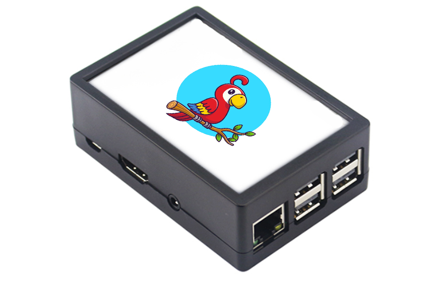

<div id="single-portfolio">
	<div id="portfolio-details" class="container">
		<a class="close-folio-item" href="#"><i class="fa fa-times"></i></a>
		
		<div class="row">
			<div class="col-sm-9">
				<div class="project-info">
					<h3>Semka Pu</h3>
					<p>На плате расположено несколько разъемов USB 3.0 PopuMI и разъём питания. Компьютер обладает хорошей произдительностью для своих размеров. Выпущен на Архитектуре Pug97</p>
					<p>Проект задумывался как попытка компании зайти на рынок компьютерного оборудывания. Одноплатник для различных проектов.</p>
				</div>
			</div>
			<div class="col-sm-3">
				<div class="project-details">
					<h3>Детали проекта</h3>
					<p><span>Цель </span></p>
					<p><span>Начало проекта</span> 9-12-2</p>
					<p><span>Тип</span> компьютерное оборудывание</p>
				</div>  
			</div>
		</div>
	</div>
</div>